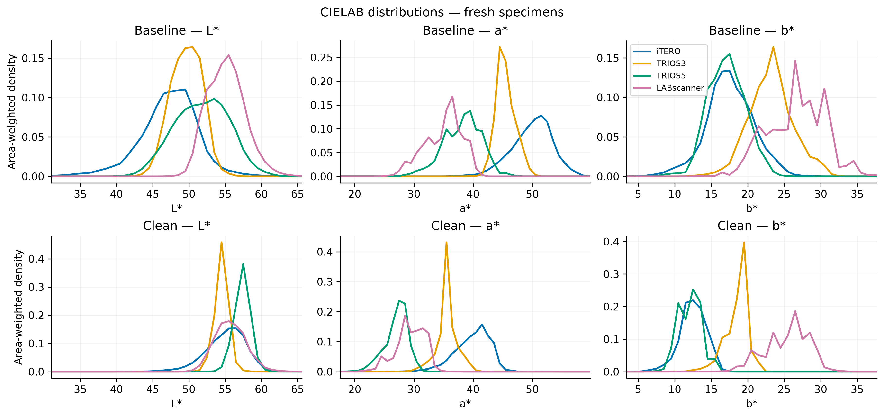
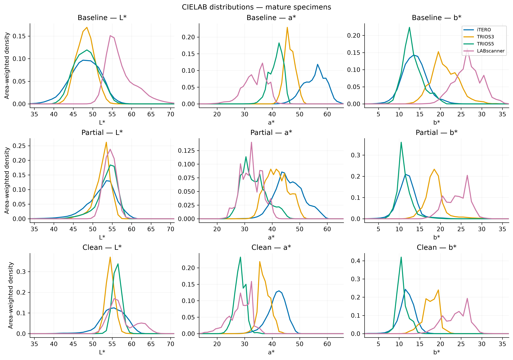
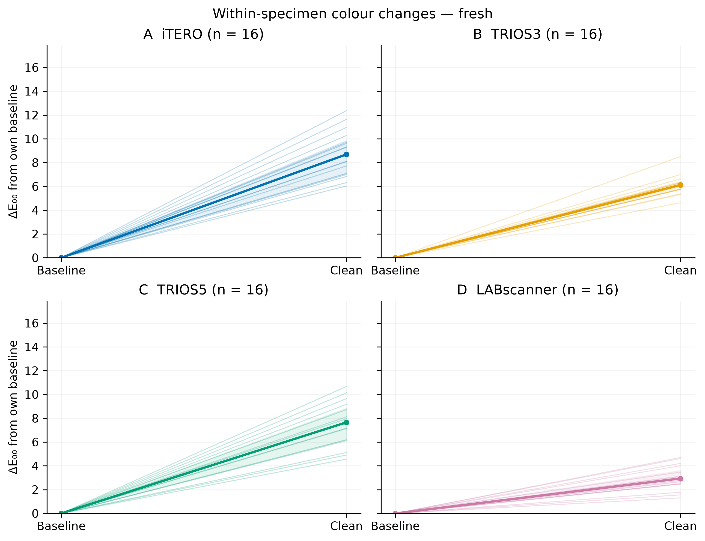
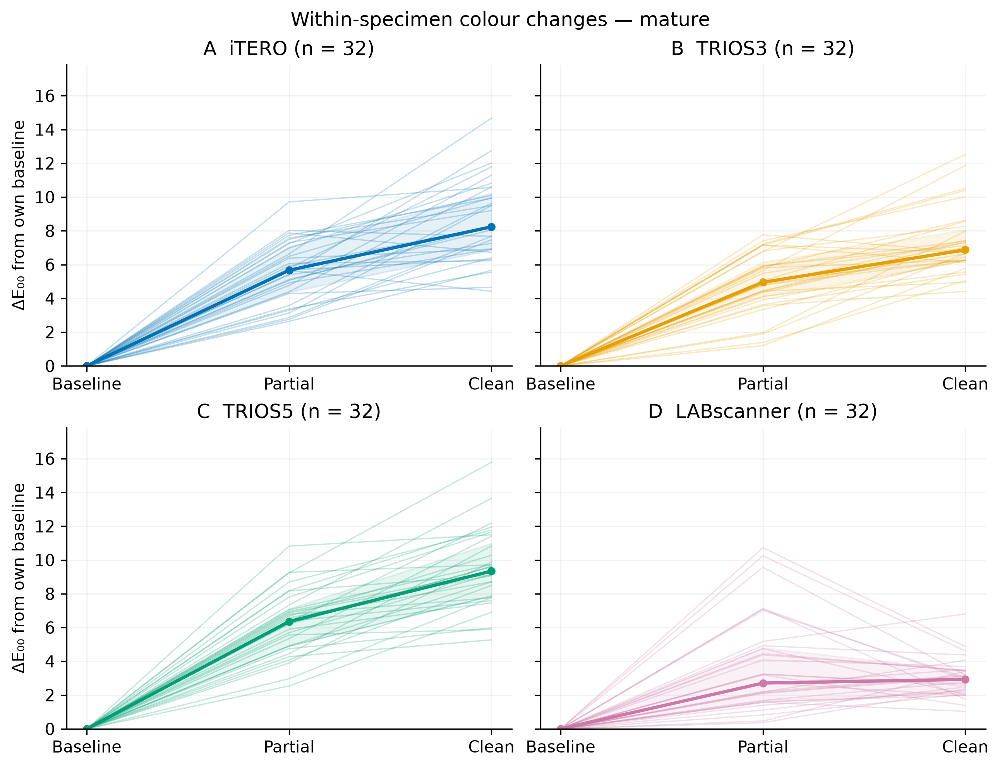
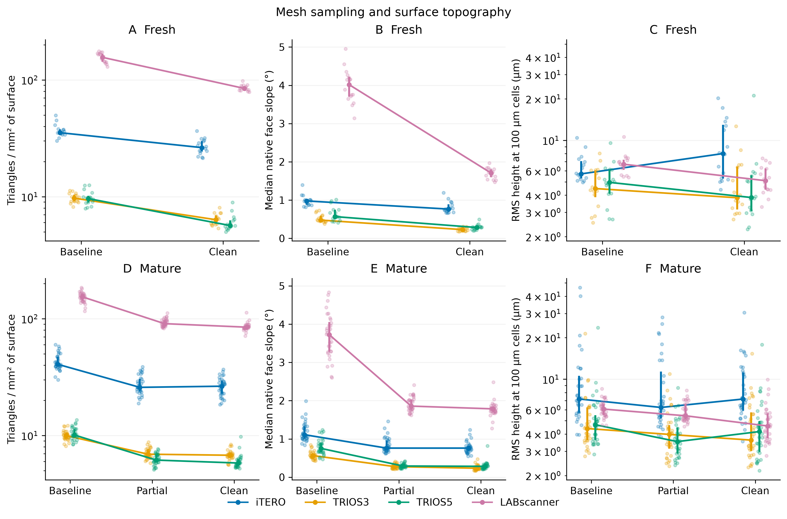
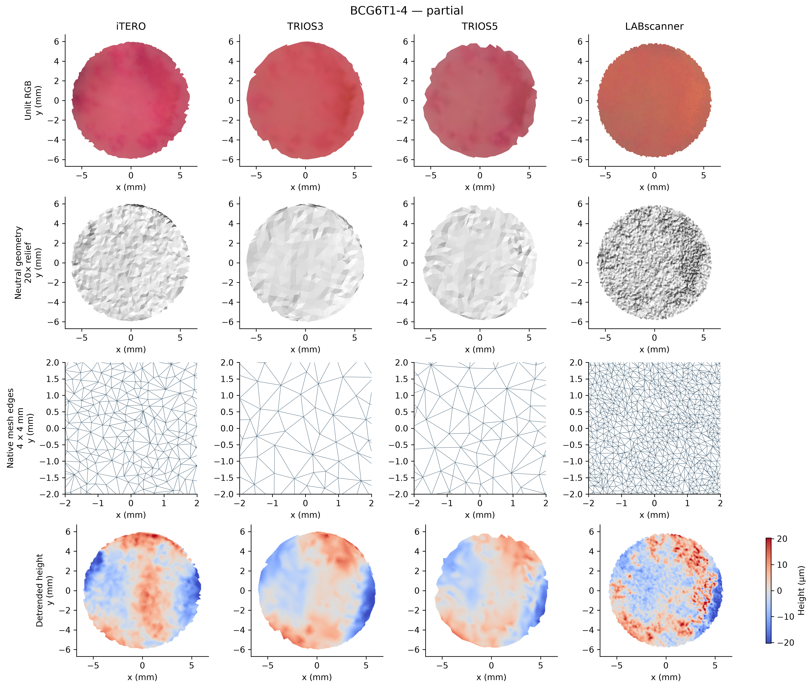
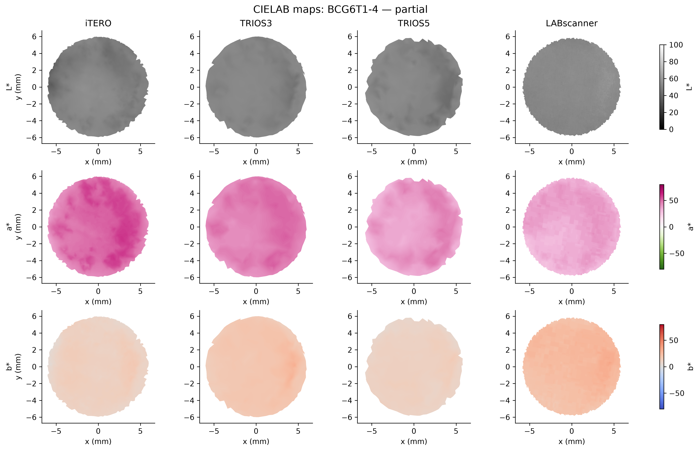
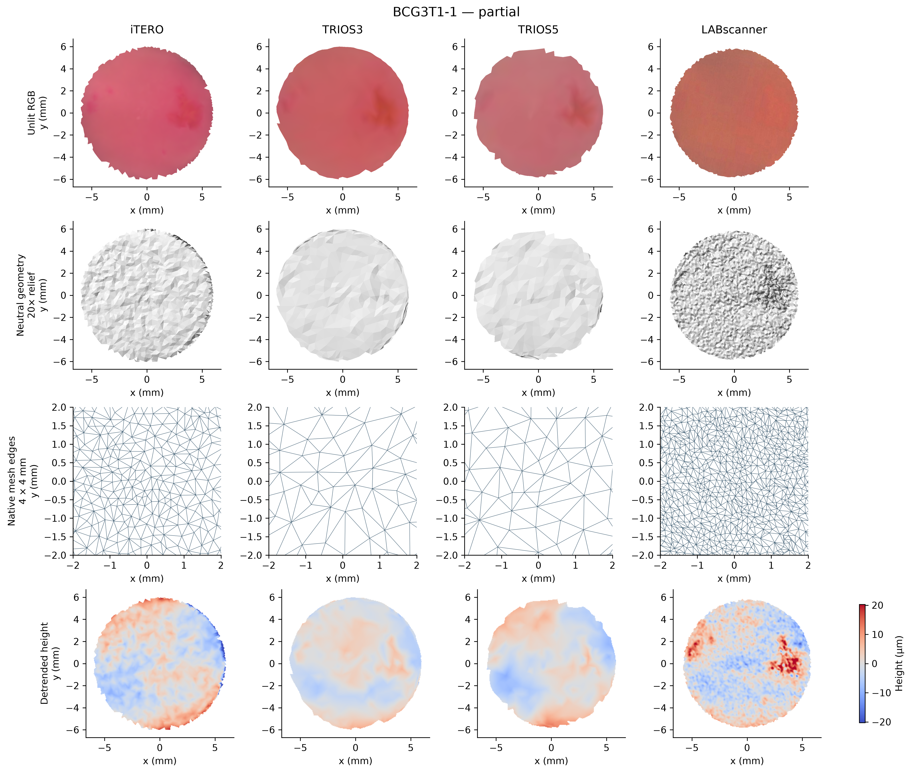
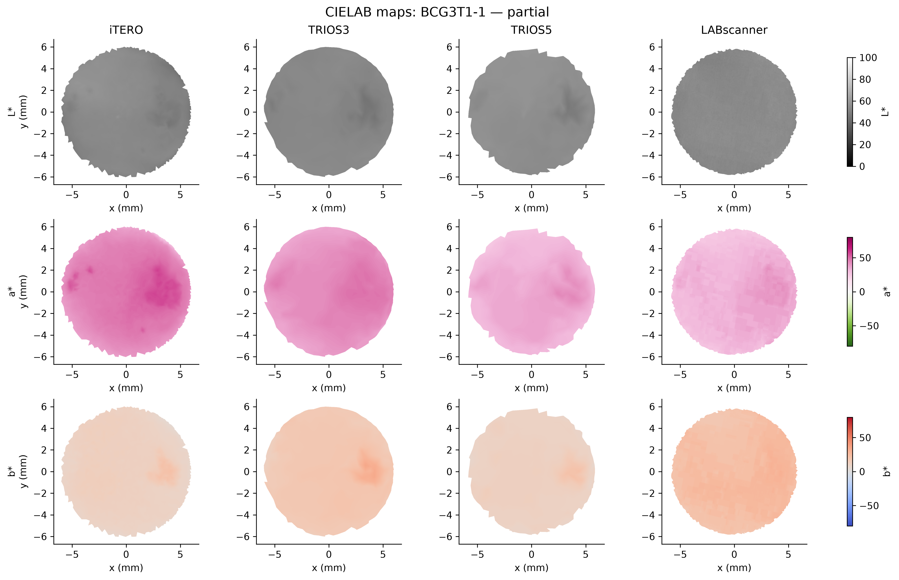

Version 1.1.0 · C:\Users\au662213\repos\biocal3d\analysis\Final\BioCal3D_ROI_Exploration\BioCal3D_ROI_Exploration\ROI_Exploration_20261023_091009
Discovered 512 scans / 48 physical specimens; analysed 512 scans / 48 specimens. Failures: 0. LABscanner is a laboratory scanner.
| cohort | scanner | stage | analysed_scans |
|---|---|---|---|
| fresh | LABscanner | baseline | 16 |
| fresh | LABscanner | clean | 16 |
| fresh | TRIOS3 | baseline | 16 |
| fresh | TRIOS3 | clean | 16 |
| fresh | TRIOS5 | baseline | 16 |
| fresh | TRIOS5 | clean | 16 |
| fresh | iTERO | baseline | 16 |
| fresh | iTERO | clean | 16 |
| mature | LABscanner | baseline | 32 |
| mature | LABscanner | clean | 32 |
| mature | LABscanner | partial | 32 |
| mature | TRIOS3 | baseline | 32 |
| mature | TRIOS3 | clean | 32 |
| mature | TRIOS3 | partial | 32 |
| mature | TRIOS5 | baseline | 32 |
| mature | TRIOS5 | clean | 32 |
| mature | TRIOS5 | partial | 32 |
| mature | iTERO | baseline | 32 |
| mature | iTERO | clean | 32 |
| mature | iTERO | partial | 32 |

Within each scan, colour histograms are weighted by visible 3D surface area and normalised. Curves average scan histograms with one equal contribution per specimen. Assumed sRGB/D65/2°; these describe exported appearance. Background pixels are excluded.

Within each scan, colour histograms are weighted by visible 3D surface area and normalised. Curves average scan histograms with one equal contribution per specimen. Assumed sRGB/D65/2°; these describe exported appearance. Background pixels are excluded.

Thin lines follow individual physical specimens within each scanner. Thick lines show medians and shading shows the interquartile range at each stage. ΔE₀₀ compares area-weighted scan-mean CIELAB colours against the same specimen's baseline, whose change is zero by definition. All scanner panels and both cohorts share the same vertical limits. Fresh specimens have two stages; mature specimens have three. Stage names do not identify plaque pixels.

Thin lines follow individual physical specimens within each scanner. Thick lines show medians and shading shows the interquartile range at each stage. ΔE₀₀ compares area-weighted scan-mean CIELAB colours against the same specimen's baseline, whose change is zero by definition. All scanner panels and both cohorts share the same vertical limits. Fresh specimens have two stages; mature specimens have three. Stage names do not identify plaque pixels.

Rows show fresh (A–C) and mature (D–F) specimens. Columns show triangle density per mesh surface area, area-weighted median native face inclination relative to the best-fit plane, and plane-detrended RMS height after surface-area-weighted averaging into 100 µm cells. Dots are individual scans; connected markers show medians and bars show the specimen interquartile range. The density and RMS axes are logarithmic; the limits for each metric are shared across cohorts. Common cell width does not equalise scanner resolving power. These are unfiltered scanner-derived topography descriptors, not independently validated physical roughness or accuracy measurements.

Matched scans of one specimen. Rows show saved RGB, neutral-shaded native geometry with a fixed 20× vertical exaggeration for display only, native triangle edges in a 4 mm square, and area-averaged/detrended height at 0.05 mm cells. The height colour limit is shared across all selected scans (±20.3 µm). Lighting and relief exaggeration are identical across scanners; quantitative measurements use unexaggerated geometry. These views illustrate appearance and structure without asserting plaque location.

CIELAB channels derived from the saved RGB projection under assumed sRGB/D65/2°. Each channel uses identical display limits across scanners; limits for a* and b* are ±80 and may clip display extremes. All numeric summaries use the full, unclipped values.

Matched scans of one specimen. Rows show saved RGB, neutral-shaded native geometry with a fixed 20× vertical exaggeration for display only, native triangle edges in a 4 mm square, and area-averaged/detrended height at 0.05 mm cells. The height colour limit is shared across all selected scans (±20.3 µm). Lighting and relief exaggeration are identical across scanners; quantitative measurements use unexaggerated geometry. These views illustrate appearance and structure without asserting plaque location.

CIELAB channels derived from the saved RGB projection under assumed sRGB/D65/2°. Each channel uses identical display limits across scanners; limits for a* and b* are ±80 and may clip display extremes. All numeric summaries use the full, unclipped values.
No processing failures.
Runtime: 292.7 seconds. See run_config.json for settings, assumptions and software versions.